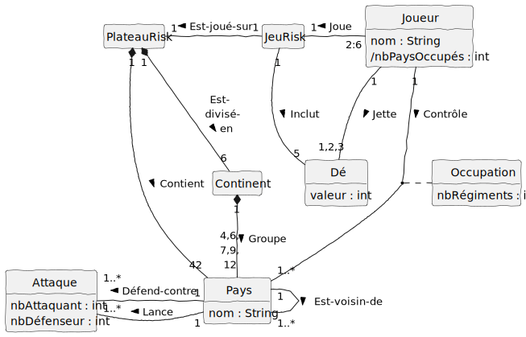
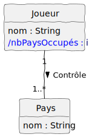
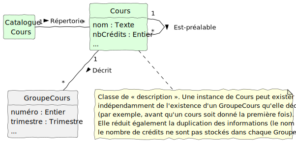
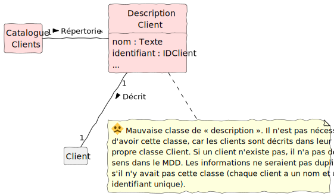
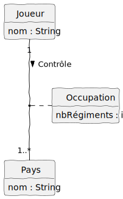

Les MDD sont expliqués en détail dans le chapitre 9 , mais voici des points importants :
- Les classes conceptuelles ne sont pas des classes logicielles. Ainsi, selon la méthodologie de Larman, elles n’ont pas de méthodes.
- Les classes ont des noms commençant avec une lettre majuscule, par exemple
Joueuret elles ne sont jamais au pluriel, par exempleJoueurs
4.1 Classes conceptuelles
Il y a trois stratégies pour identifier les classes conceptuelles :
- Réutiliser ou modifier des modèles existants.
- Utiliser une liste de catégories.
- Identifier des groupes nominaux.
4.1.1 Catégories pour identifier des classes conceptuelles
| Catégorie | Exemples |
|---|---|
| Transactions d’affaire: Elles sont essentielles, commencez l’analyse par les transactions. | Vente, Attaque, Réservation, Inscription, EmpruntVélo |
| Lignes d’une transaction: Éléments compris dans une transaction. | LigneArticles, ExemplaireLivre, GroupeCours |
| Produit ou service lié à une transaction ou une ligne de transaction: Pour quel concept sont faites des transactions ? | Article, Vélo, Vol, Livre, Cours |
| Où la transaction est-elle enregistrée ? | Caisse, GrandLivre, ManifesteDeVol |
| Rôle des personnes liées à la transaction: Qui sont les parties impliquées dans une transaction ? | Caissier, Client, JoueurDeMonopoly, Passager |
| Organisations liées à la transaction : Quelles sont les organisations impliquées dans une transaction ? | Magasin, CompagnieAérienne, Bibliothèque, Université |
| Lieu de la transaction ; lieu du service | Magasin, Aéroport, Avion, Siège, LocalCours |
| Événements notables, à mémoriser | Vente, Paiement, JeuDeMonopoly, Vol |
| Objets physiques: Important surtout lorsqu’il s’agit d’un logiciel de contrôle d’équipements ou de simulation. | Article, Caisse, Plateau, Pion, Dé, Vélo |
| Description d’entités : Voir section 9.13 pour plus d’informations. | DescriptionProduit, DescriptionVol, Livre (en opposition avec Exemplaire), Cours (en opposition avec CoursGroupe) |
| Catalogues : Les descriptions se trouvent souvent dans des catalogues | CatalogueProduits, CatalogueVols, CatalogueLivres, CatalogueCours |
| Conteneurs : Un conteneur peut contenir des objets physiques ou des informations. | Magasin, Rayonnage, Plateau, Avion, Bibliothèque |
| Contenu d’un conteneur | Article, Case (sur un Plateau de jeu), Passager, Exemplaire |
| Autres systèmes externes | SystèmeAutorisationPaiementsACrédit, SystèmeGestionBorderaux |
| Documents financiers, contrats, documents légaux | Reçus, GrandLivre, JournalDeMaintenance |
| Instruments financiers | Espèces, Chèque, LigneDeCrédit |
| Plannings, manuels, documents régulièrement consultés pour effectuer un travail | MiseAJourTarifs, PlanningRéparations |
4.2 Attributs
Les attributs sont le sujet de la section 9.16 . Comme c’est le cas pour les classes et les associations, on fait figurer les attributs quand les cas d’utilisation suggèrent la nécessité de mémoriser des informations.
Pour l’UML, la syntaxe complète d’un attribut est :
visibilité nom : type multiplicité = défaut {propriété}
Voici des points importants :
- Le type d’un attribut est important et il faut les spécifier dans un MDD, même si dans le livre de Larman (2005) il y a plusieurs exemples sans type.
- On ne se soucie pas de la visibilité des attributs dans un MDD.
- Faites attention à la confusion des attributs et des classes. Si on ne pense pas un concept X en termes alphanumériques dans le monde réel, alors il s’agit probablement d’une classe conceptuelle. Par exemple, dans le monde réel, une université n’est composée ni de chiffres ni de lettres. Elle doit être une classe conceptuelle. Voir la section 9.12 .
- De la même manière, faites attention aux informations qui sont mieux modélisées par des associations. Par exemple dans la figure 4.1 la classe
Paysn’a pas un attributjoueur:Joueur(qui contrôle le Pays) ; elle a plutôt une association avec la classeJoueuret un verbecontrôle.
Il est vrai que dans un langage de programmation comme Java, les associations doivent être les attributs dans les classes, car il s’agit des classes logicielles. Cependant, dans un modèle du domaine nous évitons des attributs si une association peut mieux décrire la relation. La relation relie visuellement les deux classes conceptuelles et elle est décrite avec un verbe.
4.3 Associations
Les associations dans le MDD sont le sujet de la section 9.14 . Il faut se référer au contenu du livre pour les détails. Une association est une relation entre des classes (ou des instances de classes). Elle indique une connexion significative ou intéressante. Voici des points importants :
- Il est facile de trouver beaucoup d’associations, mais il faut se limiter à celles qui doivent être conservées un certain temps. Pensez à la mémorabilité d’une association dans le contexte du logiciel à développer. Par exemple, considérez les associations de la figure 4.1 :
- Il existe une association entre
JoueuretPays, car il est important de savoir quel joueur contrôle quel pays dans le jeu de Risk. - Il n’y a pas d’association entre
JeuRisketAttaque, même si les attaques font partie du jeu. Il n’est pas essentiel de mémoriser l’historique de toutes les attaques réalisées dans le jeu.
- Il existe une association entre
- Il y a des associations dérivées de la liste des associations courantes. Voir le tableau 4.1.
- En UML les associations sont représentées par des lignes entre classes.
- Elles sont nommées (avec un verbe commençant par une lettre majuscule).
- Des noms simples comme « A », « Utilise », « Possède », « Contient », etc. sont généralement des choix médiocres, car ils n’aident pas notre compréhension du domaine. Essayez de trouver des noms plus riches, si possible.
- Une flèche (triangle) de « sens de lecture » optionnelle indique la direction dans laquelle lire l’association. Si la flèche est absente, on lit l’association de gauche à droite ou de haut en bas.
- Les extrémités des associations ont une expression de la multiplicité indiquant une relation numérique entre les instances des classes. Vous pouvez en trouver plusieurs exemples dans la figure 4.1.
| Catégorie | Exemple |
|---|---|
| A est une transaction liée à une transaction B | PaiementEnEspèces – Vente Réservation – Annulation |
| A est un élément d’une transaction B | LigneArticles – Vente |
| A est un produit pour une transaction (ou un élément de transaction) B | Article – LigneArticles (ou Vente) Vol – Réservation |
| A est un rôle lié à une transaction B | Client – Paiement Passager – Billet |
| A est une partie logique ou physique de B | Tiroir – Registre Case – Plateau Siège – Avion |
| A est physiquement ou logiquement contenu dans B | Registre – Magasin Joueur – Monopoly Passager – Avion |
| A est une description de B | DescriptionProduit – Article DescriptionVol – Vol |
| A est connu/consigné/enregistré/saisi dans B | Vente – Registre Pion – Case Réservation – ManifesteDeVol |
| A est un membre de B | Caissier – Magasin Joueur – Monopoly Pilote – CompagnieAérienne |
| A est une sous-unité organisationnelle de B | Rayon – Magasin Maintenance – CompagnieAérienne |
| A utilise, gère ou possède B | Caissier – Registre Joueur – Pion Pilote – Avion |
| A est voisin de B | Article – Article Case – Case Ville – Ville |
4.4 Exemple de MDD pour le jeu de Risk
La figure 4.1 est un MDD pour le jeu de Risk, selon l’exemple mentionné dans le chapitre sur les cas d’utilisation.

4.5 Attributs dérivés
Les attributs dérivés sont expliqués en détail dans la section 9.16 . Il s’agit des attributs qui sont calculés à partir d’autres informations reliées à la classe. Ils sont indiqués par le symbole / devant leur nom. L’exemple à la figure 4.2 s’applique à la règle du jeu de Risk spécifiant qu’un joueur reçoit un certain nombre de renforts selon le nombre de pays occupés. La classe Joueur pourrait avoir un attribut dérivé /nbPaysOccupés qui est calculé selon le nombre de Pays contrôlés par le joueur.

nbPaysOccupés est un attribut dérivé et sa valeur sera calculée selon le nombre de pays de l’association. (PlantUML)4.6 Classes de « description » et de catalogues
Deux catégories de classes conceptuelles qui vont de pair sont les descriptions d’entités et les catalogues qui agrègent les descriptions. Elles sont expliquées en détail dans la section 9.13 . Voici des conditions pour utiliser correctement une classe de description d’une autre classe « X » :
- Il faut disposer de la description d’un produit ou d’un service « X » indépendamment de l’existence actuelle des « X ». Par exemple, il pourrait y avoir une rupture de stocke d’un Produit (aucune instance actuelle), mais on a besoin de connaître son prix. La classe DescriptionProduit permet d’avoir cette information, même s’il n’y a plus d’instances de Produit. Un autre exemple est un trimestre où un cours LOG711 ne se donne pas (il n’y a pas de GroupeCours de LOG711 dans le trimestre actuel). Alors une classe Cours (qui joue le rôle de description) sert pour spécifier le nombre de crédits, les cours préalables, etc.
- La suppression d’instances de « X » entraîne la perte de l’information qui doit être mémorisée, mais a été incorrectement associée à l’entité en question.
- La classe de description réduit la duplication des informations.
La figure 4.3 présente une classe de description pour le contexte de cours et groupe-cours.

Attention de ne pas faire l’erreur naïve d’utiliser une classe de description simplement pour « décrire » une autre classe. Voir la figure 4.4 pour un exemple.

4.7 Classes d’association
Les classes d’association dans le MDD sont le sujet de la section A32.10/F26.10 .
Il pourrait être utile d’avoir une classe d’association dans un MDD si :
- un attribut est lié à une association ;
- la durée de vie des instances de la classe d’association dépend de l’association ;
- il y a une association N-N entre deux concepts et des informations liées a l’association elle-même.
Dans l’exemple à la figure 4.5, voici pourquoi il y a une classe d’association Occupation. Lorsqu’un Joueur contrôle un Pays, il doit y avoir des armées dans ce dernier. Le MDD pourrait avoir un attribut nbRégiments dans la classe Pays. Cependant, l’attribut nbRégiments est lié à l’association entre le Joueur et le Pays qu’il contrôle, alors on décide d’utiliser une classe d’association.
Si un Joueur envahit un Pays, la nouvelle instance de la classe d’association Occupation sera créée (avec la nouvelle association). Pourtant, cette instance d’Occupation sera détruite si un autre Joueur arrive à prendre le contrôle du Pays. Alors, la durée de vie de cette instance dépend de l’association.
Voir le livre obligatoire pour plus d’exemples.

4.8 Affinement du MDD
Lorsqu’on modélise un domaine, il est normal de commencer avec un modèle simple (à partir d’un ou deux cas d’utilisation) et ensuite on l’affine dans les itérations suivantes, où on y intègre d’autres éléments plus subtils ou complexes du problème qu’on étudie. Les détails de cette approche sont présentés dans le chapitre F26/A32 . Bien que la matière soit présentée plus tard dans le livre, ce sont des choses à savoir pour la modélisation d’un domaine, même dans une première itération.
Voici un résumé des points importants traités dans ce chapitre, dont quelques-uns ont déjà été présentés plus haut :
- Composition, par exemple, la classe Continent qui groupe les Pays dans la figure 4.1. Larman propose d’utiliser la composition lorsque :
- la durée de vie du composant est limitée à celle du composite (lorsqu’un objet Continent est instancié ça doit grouper des instances de Pays pour être cohérent), il existe une dépendance création-suppression de la partie avec le tout (ça ne fait pas de sens de supprimer un objet Pays d’une instance de Continent dans le jeu de Risk).
- il existe un assemblage logique ou physique évident entre le tout est les parties (on ne peut construire un Continent sans les Pays).
- certaines propriétés du composite, comme son emplacement, s’étendent aux composants.
- les opérations que l’on peut appliquer au composite, telles que destruction, déplacement et enregistrement, se propagent aux composants.
- Généralisation/spécialisation, voir le livre pour les exemples et les directives, notamment la règle des 100 % (conformité à la définition) et la règle « est-un » (appartenance à l’ensemble).
- Attribut dérivé, par exemple,
/nbPaysOccupésdans la classe Joueur est un attribut dérivé de l’association entre Joueur et Pays (figure 4.2). - Hiérarchies dans un MDD et héritage dans l’implémentation
- Noms de rôles
- Organisation des classes conceptuelles en Packages (surtout lorsque le MDD contient un nombre important de classes conceptuelles)
4.9 FAQ MDD
4.9.1 Y a-t-il un MDD pour chaque cas d’utilisation ?
Selon la méthodologie de ce manuel, bien qu’une application ait souvent plusieurs fonctionnalités (cas d’utilisation), il n’y a qu’un seul MDD.
Cela dit, le MDD est comme un fichier de code source, puisque sa version peut évoluer avec le projet. Le MDD évoluera normalement après chaque itération, car on fait une nouvelle analyse pour les nouvelles fonctionnalités visées dans l’itération. Au début du projet, le MDD est plus simple, puisqu’il porte sur seulement les cas d’utilisation ciblés à la première itération. Le MDD devient plus riche au fur et à mesure qu’on avance dans les itérations, parce qu’il modélise davantage de concepts reliés aux problèmes traités par les nouvelles fonctionnalités à réaliser.
Par exemple, la version initiale du MDD (chapitre 9 ) ne traite pas la fonctionnalité de paiement par carte de crédit. Les classes conceptuelles modélisant la problématique de paiements par carte de crédit sont absentes dans le MDD initial. Plus tard (après plusieurs itérations, dans le chapitre sur le raffinement du MDD), on voit un MDD beaucoup plus riche qui reflète la modélisation des concepts reliés à des fonctionnalités comme les paiements par carte de crédit, les demandes d’autorisation de paiement, etc.
4.9.2 Un modèle du domaine est-il la même chose qu’un modèle de données?
Voici la réponse de Craig Larman (2005) dans la section 9.2 :
Il peut y avoir des concepts dans un domaine qui ne sont pas dans la base de données. Considérez l’exemple de la carte de crédit utilisée pour payer mais qui n’est jamais stockée pour les raisons de sécurité. Avec seulement un modèle de données, cette classe conceptuelle ne serait jamais modélisée. Larman précise :
Vous pouvez aussi lire cette question .